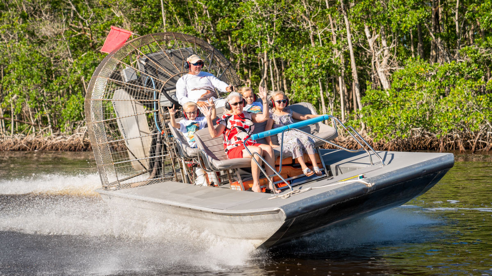
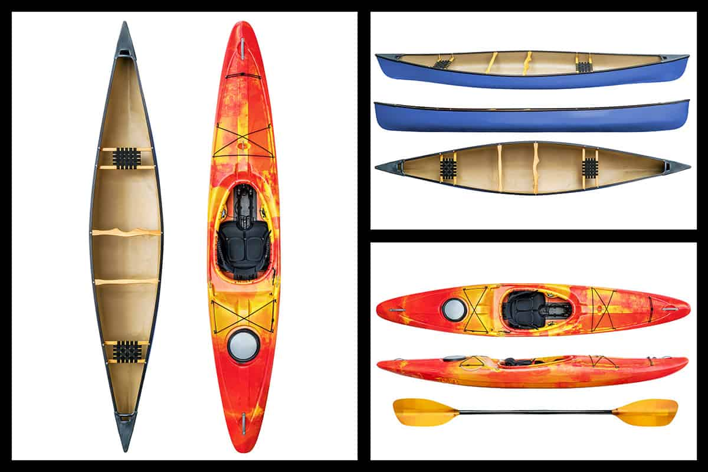
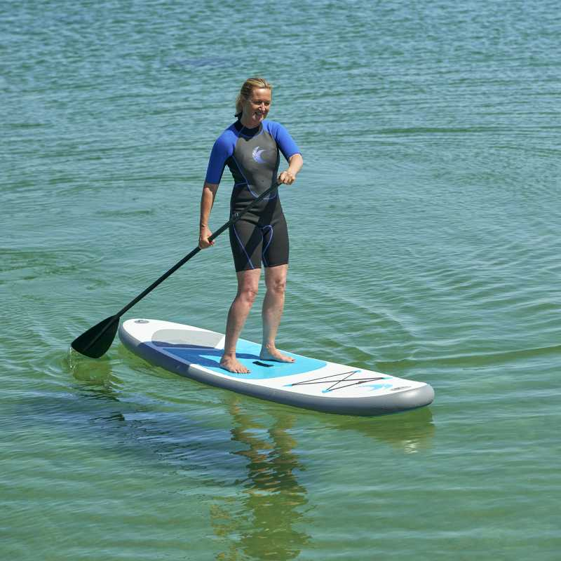
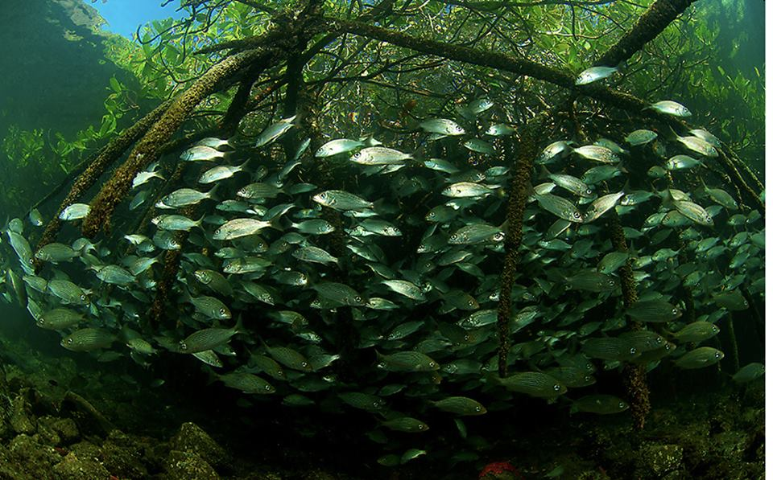

Mangrove swamps are muddy swamp area so there are lots of space to do water activites. Here are some example.
- Boating
In boating there are lots of things. First, there is the Airboat which are boats with big fans on the back. Second, the canoes and kayaks. They are really similar. Canoes have larger space for you feet and the kayak's space is really tight.The last but not the least, for boating is called S.U.P(Stand Up Paddling) - Fishing
It wouldn't be a list of water activites without fishing. But, fishing would be difficult if you're using a rod and a bait becaue they can get stuck easily. You will have to go a area where there are loads of fish and cast out a net to get them but there might be rare fishes so maybe release them back after you've had enough fun. - Hiking and wildlife seeing
For Hiking, you can do it on the broadwalks that have been laid down on the muddy soil bellow it and you can also do wildlife seeing at the same time while doing it. If you want to do wildlife seeing seperately you can do it while resting on one of the viewing towers.
If you are there and don't have too much idea of what to do, there is a information center you can ask at.